Zakazivanje
Pozovete nas ili popunite formu. Javljamo se istog radnog dana i dogovaramo termin koji vam odgovara. Ako niste sigurni koji pregled vam treba — recite nam šta vas muči, mi predlažemo.
Specijalistička dijagnostika, lečenje kožnih oboljenja i dermatohirurgija. Tri profesora dermatovenerologije, oprema po svetskim standardima — od 2012. u Nišu.
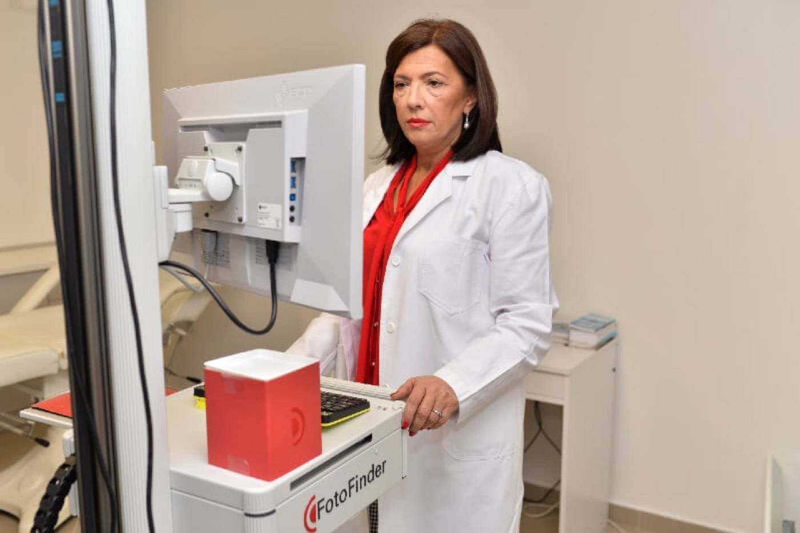
Dermatovenerološka klinika PRODERMA PLUS od 2012. godine pruža savete dermatologa i bavi se prevencijom, lečenjem kožnih oboljenja i rešavanjem estetskih problema vaše kože.
O kvalitetu naših usluga najbolje govori veliki broj pacijenata koji su nam već ukazali svoje poverenje. Raspolažemo savremenom opremom koja ispunjava najnovije svetske standarde i pružamo usluge koje prate svetske trendove u dijagnostici i rešavanju kožnih problema — dermatološkim intervencijama, estetskim i laserskim tretmanima.
Kompletan spisak naših usluga nalazi se u okviru cenovnika. Ovo su samo neke od usluga koje nudimo:
digitalna dermoskopija, FotoFinder mapiranje, alergološko epikutano testiranje, biopsija kože, uklanjanje benignih izraslina radiotalasima, hemijski piling, tretman hidratacije, tretman hiperpigmentacije, elektroepilacija, lipoliza, lifting, laserska epilacija žena i muškaraca…
Prilikom specijalističkih dermatoveneroloških pregleda možete dobiti sve informacije o promenama na koži, njihovom lečenju, neophodnim intervencijama i estetskim i laserskim tretmanima.
U našoj klinici možete zahtevati i pregled profesora. Dobrodošli u vašu PRODERMU PLUS — kliniku sa potpisom.
Klinika se nalazi u Nišu, ul. Stanka Vlasotinčanina 3/1 — na idealnom mestu u gradu, izolovana od gradske gužve i buke, saobraćajno lako pristupna i nadomak centralnog gradskog jezgra.
„Dermatologija se mnogo promenila i stalno napreduje, a moja želja je da pacijentima pružim najbolji tretman i zato je važno da nega kože, briga o nečijoj koži prati svetske trendove.“
Za lečenje naših pacijenata, uz stručno znanje, koristimo najsavremenije tehnologije i lasere poslednje generacije.
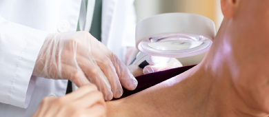
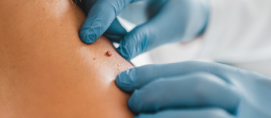
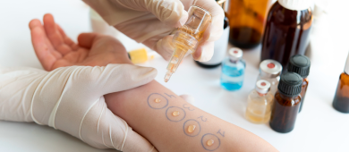
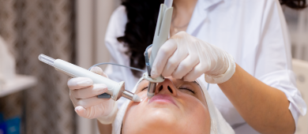
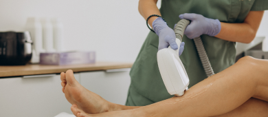
Od poziva do kontrole — četiri koraka, bez iznenađenja. Znate unapred šta vas čeka i koliko traje.
Pozovete nas ili popunite formu. Javljamo se istog radnog dana i dogovaramo termin koji vam odgovara. Ako niste sigurni koji pregled vam treba — recite nam šta vas muči, mi predlažemo.
Specijalista pregleda kožu, sluzokožu, nokte i kosu. Pitamo za istoriju, terapije koje ste probali i navike. Ovo je deo za koji izdvajamo najviše vremena — bez njega dijagnostika je pogađanje.
Po potrebi radimo digitalnu dermoskopiju, FotoFinder mapiranje mladeža, epikutano testiranje ili biopsiju. Nalaz dobijate sa objašnjenjem šta znači, a ne samo sa latinskim terminom.
Dobijate plan sa realnim rokovima — koliko seansi, kada se vidi rezultat i šta radite kod kuće. Kontrolni termin zakazujemo odmah, da se plan ne prekine na pola.

Stručnost osoblja na čelu sa prof. dr Ivanom Binić, prof. dr Milenkom Stanojevićem i prof. dr Vesnom Karanikolić postavlja PRODERMU PLUS u red klinika sa najvećim autoritetom iz oblasti dermatovenerologije u Srbiji i regionu.
Osnivač klinike i redovni profesor dermatovenerologije. Uža oblast: oboljenja kože, dermoskopija i rano otkrivanje melanoma. Autor radova u domaćim i međunarodnim časopisima.
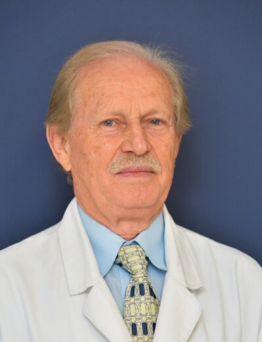
MSProfesor dermatovenerologije sa dugogodišnjim kliničkim iskustvom. Bavi se hroničnim dermatozama, psorijazom i alergijskim reakcijama kože.
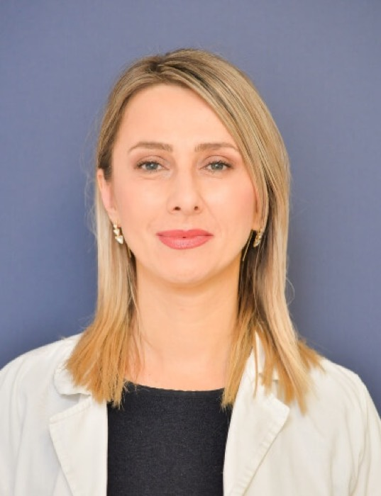
VKProfesor dermatovenerologije. Fokus na dermatohirurgiji, uklanjanju promena na koži i estetskim procedurama sa medicinskom indikacijom.
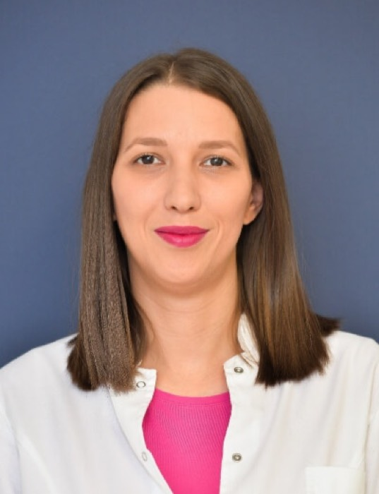
MGSpecijalista dermatovenerolog. Radi lasersku epilaciju, tretmane hiperpigmentacija i medicinske pilinge. Vodi protokole nege za osetljivu kožu.
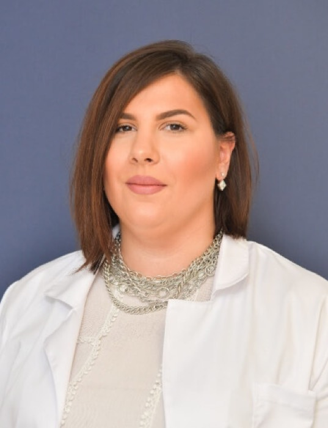
NKLekar na specijalizaciji dermatovenerologije. Učestvuje u dijagnostici i praćenju pacijenata pod nadzorom specijaliste.
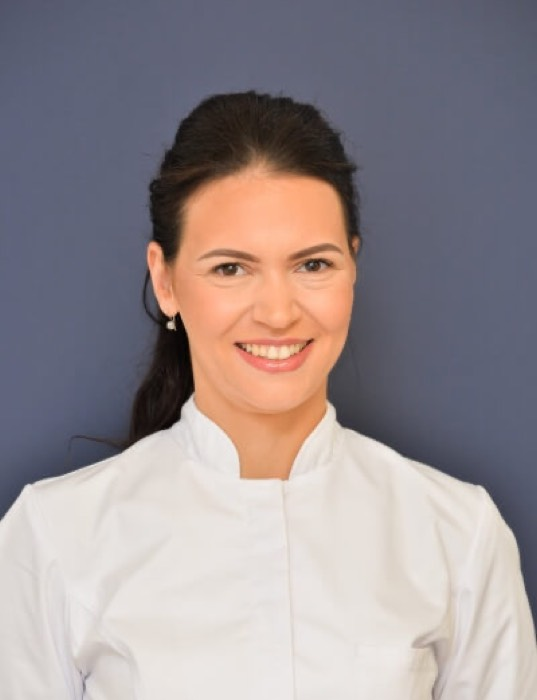
APMedicinska sestra — tehničar. Priprema pacijenta za intervencije, asistira u zahvatima i vodi protokol nege posle tretmana.
Pet alata koje smo napravili da biste između dva pregleda znali šta vaša koža traži danas — od UV zračenja iznad Niša do samopregleda mladeža.
Izaberite svoj fototip kože i dobićete procenu vremena do prvog crvenila, kao i preporučeni SPF za današnje uslove.
Učitavanje podataka o vazduhu za Niš…
Koncentracije polena za Niš, u zrncima po kubnom metru. Kod atopijskog dermatitisa, ekcema i kontaktne urtikarije visok polen se često vidi na koži pre nego u nosu.
Jednom mesečno, pri dobrom svetlu, pregledajte kožu celog tela. Ako mladež ispunjava bilo koji od pet kriterijuma — ne čekajte. Digitalna dermoskopija i FotoFinder mapiranje daju odgovor za jedan pregled.
Jedna polovina mladeža ne odgovara drugoj kada ga zamislite prepolovljenog.
Ivice su nazubljene, nepravilne ili razlivene, a ne glatke i jasno ograničene.
Više nijansi u istom mladežu — smeđa, crna, crvena, bela ili plavičasta polja.
Prečnik veći od 6 mm (otprilike gumica na vrhu olovke) — ili bilo koji rast.
Menja se — raste, menja boju ili oblik, svrbi, krvari ili se ljušti.
Ako prepoznate bilo koji znak — zakažite dermoskopiju. Rano otkriven melanom ima izuzetno visoku stopu izlečenja, a pregled traje kraće od pauze za kafu.
Zakaži dermoskopiju—
Divan ambijent, opuštena atmosfera, velika stručnost celokupnog tima. Vidimo se ponovo!
Jako sam zadovoljan uslugom. Osoblje je ljubazno, profesionalnost je na najvišem nivou. Sve pohvale.
Otišla sam zbog jednog mladeža, a dobila kompletnu mapu kože i objašnjenje šta da pratim. Prvi put da mi neko odvoji toliko vremena i sve strpljivo objasni.
Godinama sam se mučila sa pigmentacijama posle trudnoće. Dobila sam realan plan, bez obećavanja čuda — i rezultat koji se vidi posle treće seanse.
Dve godine nisam znao na šta reagujem. Epikutani test je dao odgovor iz prve. Klinika je čista, tačna sa terminima i sve deluje ozbiljno.
Popunite formu i javljamo vam se radi potvrde termina.